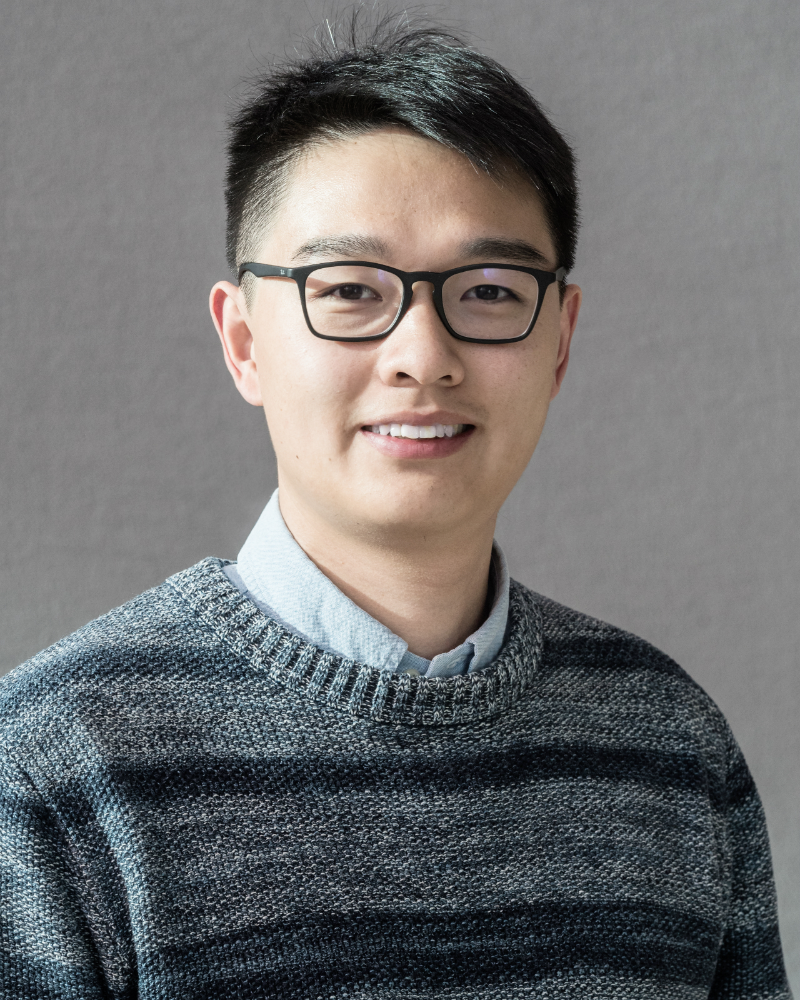

Kai Wu (Kyle)
I am a principal engineer at Microsoft, working on large-scale LLM inference system optimization for high performance and resource elasticity. Before Microsoft, I was a researcher at ByteDance Infrastructure System Lab, focusing on hardware acceleration for infrastructure systems. I received my Ph.D. in Electrical Engineering and Computer Sciences from the University of California, Merced, working with Prof. Dong Li to build system supports for big, heterogeneous memory platforms. I also did internships at Lawrence Livermore National Laboratory, Los Alamos National Laboratory, and ByteDance.
My interests include: 1) system optimization for high performance computing, machine learning and database workloads; 2) software/hardware co-design for data center infrastructure systems.
Google Scholar LinkedInSelected Publications
- [ICDE’23] Jason Sun, Haoxiang Ma, Li Zhang, Huicong Liu, Haiyang Shi, Shangyu Luo, Kai Wu, Kevin Bruhwiler, Cheng Zhu, Yuanyuan Nie, Jianjun Chen, Lei Zhang and Yuming Liang. “Accelerating Cloud-Native Databases with Distributed PMem Stores”. In 39th IEEE International Conference on Data Engineering, 2023.
- [VLDB’22] Jianjun Chen, Yonghua Ding, Ye Liu, Fangshi Li, Li Zhang, Mingyi Zhang, Kui Wei, Lixun Cao, Dan Zou, Yang Liu, Lei Zhang, Rui Shi, Wei Ding, Kai Wu, Shangyu Luo, Jason Yang Sun and Yuming Liang. “ByteHTAP: ByteDance’s HTAP System with High Data Freshness and Strong Data Consistency”. In 48th International Conference on Very Large Data Bases, 2022.
- [FAST'21] Kai Wu, Jie Ren, Ivy Peng and Dong Li. “ArchTM: Architecture-Aware, High Performance Transaction for Persistent Memory”. In 19th USENIX Conference on File and Storage Technologies, 2021.
- [HPCA’21] Jie Ren, Jiaolin Luo, Kai Wu, Minjia Zhang, Hyeran Jeon and Dong Li. “Efficient Tensor Migration and Allocation on Heterogeneous Memory Systems for Deep Learning”. In The 27th IEEE International Symposium on High-Performance Computer Architecture, 2021.
- [ICS’21] Jie Ren, Jiaolin Luo, Ivy Peng, Kai Wu and Dong Li. “Optimizing Large-Scale Plasma Simulations on Persistent Memory-based Heterogeneous Memory with Effective Data Placement Across Memory Hierarchy”. In 35th International Conference on Supercomputing, 2021.
- [PACT’20] Kai Wu, Ivy B. Peng, Jie Ren and Dong Li. “Ribbon: High Performance Cache Line Flushing for Persistent Memory”. In 29th International Conference on Parallel Architectures and Compilation Techniques, 2020.
- [IPDPS’20] Ivy B. Peng, Kai Wu, Jie Ren, Dong Li and Maya Gokhale. “Demystifying the Performance of HPC Scientific Applications on NVM-based Memory Systems”. In 34rd IEEE International Parallel and Distributed Processing Symposium, 2020.
- [MCHPC’19] Ivy B. Peng, Marty McFadden, Eric Green, Keita Iwabuchi, Kai Wu, Dong Li, Roger Pearce, and Maya Gokhale. “UMap: Enabling Application-driven Optimizations for Page Management”. In Workshop on Memory Centric High Performance Computing, 2019.
- [SC’18] Kai Wu, Jie Ren and Dong Li. “Runtime Data Management on Non-Volatile Memory-based Heterogeneous Memory for Task-Parallel Programs”. In 30th ACM/IEEE International Conference for High Performance Computing, Networking, Storage and Analysis, 2018.
- [ICPP’18] Kai Wu, Wenqian Dong, Qiang Guan, Nathan Debardeleben and Dong Li. “Modeling Application Resilience in Large Scale Parallel Execution”. In 47th International Conference on Parallel Processing, 2018.
- [SC’17] Kai Wu, Yingchao Huang and Dong Li. “Unimem: Runtime Data Management in Non-Volatile Memory-based Heterogeneous Main Memory”. In 29th ACM/IEEE International Conference for High Performance Computing, Networking, Storage and Analysis, 2017.
Service
I have served as a reviewer for the following journals and conferences:- IEEE Transactions on Parallel and Distributed Systems
- IEEE Access
- Future Generation Computer Systems
- The Journal of Supercomputing
- ACM/IEEE International Conference for High Performance Computing, Networking, Storage, and Analysis (SC)
- IEEE International Parallel & Distributed Processing Symposium (IPDPS)
- International Conference on Parallel Processing (ICPP)
- IEEE International Conference on Cluster Computing (Cluster)
- IEEE International Conference on High Performance Computing and Communications (HPCC)
- IFIP International Conference on Network and Parallel Computing (NPC)
- IEEE International Conference on Networking, Architecture, and Storage (NAS)